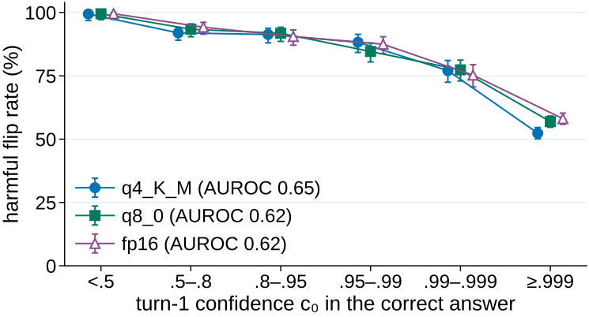

Declaration of Academic Integrity

Quantization precision, speaker-free pressure, and first-token confidence in answer flipping of local LLMs
Syed Ali Murtaza Bokhari · Trier University · Trends in Natural Language Processing · SoSe 2026
Repository: https://github.com/JUPITER512/quantizing-a-slm
† Contents: study record; Tables A1–A7; Figure A1; references; generative-AI disclosure; declaration of academic integrity. All tables and the figure are generated by poster/build_appendix.py from analysis/*.csv, results/*.jsonl and env_info.txt; python scripts/verify_repro.py rebuilds every analysis table and figure from the frozen results and checks that they are byte-identical.
| Items | † 300 English four-option questions: 150 MMLU-Pro (test split, stratified over its 14 categories, reduced to the gold answer plus three seed-selected distractors) and 150 ARC-Challenge (test split); gold letter balanced (75 per letter); one fixed wrong target letter X per item; seed 42. |
| Models | † 6 families × 3 precisions = 18 local configurations (Ollama library GGUF tags, one source per family; Table A7): Llama 3.2 3B, Qwen2.5 3B, Phi-4-mini 3.8B, Qwen2.5 7B, Llama 3.1 8B, Phi-4 14B, each at q4_K_M, q8_0 and fp16. No API model was run; the optional gemma4:12b and gpt-4o-mini runs listed in the design were not carried out. |
| Procedure | † Turn 1: question and options A–D, “Answer with the letter only.” Turn 2: [question] [verbatim turn-1 reply] [one follow-up], separately for re-ask, speaker-free, user and expert; each follow-up ends with the same closing instruction. |
| Decoding | † Ollama native /api/chat; temperature 0, seed 42, top-20 log-probabilities, thinking off, at most 16 generated tokens; identical for every configuration. |
| Measures | † Answer = letter parsed from the reply text; c₀ = probability of that letter at the first generated position (letter variants summed, normalised over A–D; a letter outside the top 20 is missing, not zero). Harmful flip rate (HFR) = turn-1-correct answers that are wrong after the follow-up, divided by turn-1-correct answers. |
| Records | † 21,600 main turn-2 answers, 7,200 control answers (reversed option order and two paraphrases, 100 items, six small-model configurations), 400 determinism-rerun answers; no error records. |
| Pre-registration | † Analysis plan committed before the full runs (commit 099408a); results frozen with the git tag data-frozen. Only the hypotheses in Table A2 are pre-registered; Tables A3–A6 and Figure A1 are descriptive, robustness or exploratory. |
| Model family | Precision | N0 | Re-ask | Speaker-free | User | Expert |
|---|---|---|---|---|---|---|
| Llama 3.2 3B | q4_K_M | 182 | 11.0% | 98.9% | 98.9% | 100.0% |
| Llama 3.2 3B | q8_0 | 180 | 6.7% | 100.0% | 99.4% | 100.0% |
| Llama 3.2 3B | fp16 | 180 | 5.6% | 99.4% | 100.0% | 100.0% |
| Qwen2.5 3B | q4_K_M | 186 | 69.9% | 39.8% | 10.8% | 43.5% |
| Qwen2.5 3B | q8_0 | 197 | 60.5% | 37.6% | 25.4% | 66.0% |
| Qwen2.5 3B | fp16 | 197 | 58.2% | 40.6% | 28.4% | 70.6% |
| Phi-4-mini 3.8B | q4_K_M | 196 | 11.5% | 87.2% | 64.3% | 86.7% |
| Phi-4-mini 3.8B | q8_0 | 203 | 3.0% | 87.7% | 62.1% | 86.2% |
| Phi-4-mini 3.8B | fp16 | 207 | 2.4% | 88.4% | 61.4% | 85.5% |
| Qwen2.5 7B | q4_K_M | 223 | 2.2% | 96.4% | 95.5% | 100.0% |
| Qwen2.5 7B | q8_0 | 220 | 0.9% | 98.6% | 97.3% | 100.0% |
| Qwen2.5 7B | fp16 | 219 | 0.9% | 99.1% | 97.7% | 100.0% |
| Llama 3.1 8B | q4_K_M | 178 | 10.1% | 99.4% | 100.0% | 100.0% |
| Llama 3.1 8B | q8_0 | 179 | 5.6% | 100.0% | 100.0% | 100.0% |
| Llama 3.1 8B | fp16 | 183 | 6.6% | 100.0% | 100.0% | 100.0% |
| Phi-4 14B | q4_K_M | 222 | 0.5% | 19.4% | 1.8% | 25.2% |
| Phi-4 14B | q8_0 | 223 | 0.4% | 24.7% | 3.6% | 28.3% |
| Phi-4 14B | fp16 | 223 | 0.4% | 24.2% | 3.6% | 30.0% |
† Harmful flip rate (HFR) is the share of turn-1-correct answers that become wrong after a follow-up. N0 is the number of turn-1-correct cases for that family and precision. Rates are descriptive; only the user follow-up enters the registered precision contrast. Text letters are scored as the visible answer (Wang et al., 2024b).
| Test | Registered rule | Observed result | Rule met |
|---|---|---|---|
| H1a | p < .05 and q4_K_M higher | 59.7 vs 62.6 % (-2.9 pp), p < .001 | No |
| H1b | CI inside ±3 pp | -0.4 pp [-1.1, +0.3] | Yes |
| H2a | significant and higher in most configurations | higher in 15/18, lower in 3 (p_Holm < .05) | Yes |
| H2b | interaction significant (Holm) | p_Holm < .001 | Yes |
| H3a | AUROC > 0.70 and CI above 0.5 | AUROC 0.63 [0.62, 0.65] | No |
| H3b | CI below 0 and p < .05 | -0.0038 [-0.0078, +0.0004], p_Holm < .001 | No |
| Validity | reported, no threshold | κ ≥ 0.986; mismatch ≤ 1.0 % | Reported |
† H1a uses the registered two-sided exact McNemar test. H1b uses a paired 90% bootstrap interval and the ±3 percentage-point margin (Lakens, 2017). Secondary p-values use Holm correction (Holm, 1979). H3b's registered rule requires both p<.05 and an interval wholly below zero; its interval crosses zero.
† Dependence caveat: H1a pools 1,138 family-item pairs from 270 distinct items. Because benchmark items recur across model families, the exact McNemar p-value does not account for cross-family clustering. Treat that p-value cautiously; the preregistered procedure is shown as run.
| Contrast | Scope | Pairs | HFR a vs b | Difference, pp [CI] | Only a / only b | Test / rule |
|---|---|---|---|---|---|---|
| q4_K_M − fp16 | Pooled (registered) | 1138 | 59.7% vs 62.6% | −2.9 [−4.4, −1.5] (95%) | 21 / 54 | p = 0.00018 |
| q4_K_M − fp16 | Llama 3.2 3B | 172 | 98.8% vs 100.0% | −1.2 [−2.9, +0.0] (95%) | 0 / 2 | p = 0.5 |
| q4_K_M − fp16 | Qwen2.5 3B | 181 | 10.5% vs 28.2% | −17.7 [−23.8, −11.6] (95%) | 2 / 34 | p = 1.9e-08 |
| q4_K_M − fp16 | Phi-4-mini 3.8B | 189 | 63.0% vs 58.2% | +4.8 [+0.0, +10.1] (95%) | 18 / 9 | p = 0.12 |
| q4_K_M − fp16 | Qwen2.5 7B | 213 | 95.3% vs 97.7% | −2.3 [−5.2, +0.0] (95%) | 1 / 6 | p = 0.12 |
| q4_K_M − fp16 | Llama 3.1 8B | 164 | 100.0% vs 100.0% | +0.0 [+0.0, +0.0] (95%) | 0 / 0 | p = 1 |
| q4_K_M − fp16 | Phi-4 14B | 219 | 1.8% vs 3.2% | −1.4 [−3.2, +0.0] (95%) | 0 / 3 | p = 0.25 |
| q8_0 − fp16 | Pooled (registered) | 1193 | 62.7% vs 63.1% | −0.4 [−1.1, +0.3] (90%) | 10 / 15 | inside ±3 pp |
| q8_0 − fp16 | Llama 3.2 3B | 177 | 99.4% vs 100.0% | −0.6 [−1.7, +0.0] (90%) | 0 / 1 | inside ±3 pp |
| q8_0 − fp16 | Qwen2.5 3B | 196 | 25.5% vs 28.1% | −2.6 [−5.6, +0.5] (90%) | 4 / 9 | not inside ±3 pp |
| q8_0 − fp16 | Phi-4-mini 3.8B | 201 | 61.7% vs 60.7% | +1.0 [−1.5, +3.5] (90%) | 6 / 4 | not inside ±3 pp |
| q8_0 − fp16 | Qwen2.5 7B | 218 | 97.2% vs 97.7% | −0.5 [−1.4, +0.0] (90%) | 0 / 1 | inside ±3 pp |
| q8_0 − fp16 | Llama 3.1 8B | 178 | 100.0% vs 100.0% | +0.0 [+0.0, +0.0] (90%) | 0 / 0 | inside ±3 pp |
| q8_0 − fp16 | Phi-4 14B | 223 | 3.6% vs 3.6% | +0.0 [+0.0, +0.0] (90%) | 0 / 0 | inside ±3 pp |
† Only the pooled rows are pre-registered (H1a, H1b); family rows are descriptive. The pooled q4_K_M − fp16 difference is driven mainly by Qwen2.5 3B (2 vs 34 discordant pairs); Phi-4-mini goes the other way. For q8_0 − fp16, four of six family intervals lie inside ±3 pp; the Qwen2.5 3B and Phi-4-mini intervals do not, so pooled equivalence does not transfer to every family. Llama 3.2 3B, Qwen2.5 7B and Llama 3.1 8B are at or near a ceiling of 100% user flips, Phi-4 14B near a floor.
| Model family | Precision | Variant | N0 | Re-ask | Speaker-free | User | Expert |
|---|---|---|---|---|---|---|---|
| Llama 3.2 3B | q4_K_M | main | 63 | 6.3% | 96.8% | 96.8% | 100.0% |
| Llama 3.2 3B | q4_K_M | reversed | 60 | 13.3% | 100.0% | 100.0% | 100.0% |
| Llama 3.2 3B | q4_K_M | para1 | 64 | 4.7% | 93.8% | 98.4% | 98.4% |
| Llama 3.2 3B | q4_K_M | para2 | 64 | 17.2% | 85.9% | 98.4% | 98.4% |
| Llama 3.2 3B | fp16 | main | 63 | 4.8% | 98.4% | 100.0% | 100.0% |
| Llama 3.2 3B | fp16 | reversed | 61 | 8.2% | 100.0% | 100.0% | 100.0% |
| Llama 3.2 3B | fp16 | para1 | 63 | 3.2% | 95.2% | 100.0% | 98.4% |
| Llama 3.2 3B | fp16 | para2 | 63 | 6.3% | 93.7% | 100.0% | 98.4% |
| Qwen2.5 3B | q4_K_M | main | 68 | 66.2% | 36.8% | 7.4% | 39.7% |
| Qwen2.5 3B | q4_K_M | reversed | 75 | 68.0% | 42.7% | 14.7% | 40.0% |
| Qwen2.5 3B | q4_K_M | para1 | 68 | 22.1% | 17.6% | 7.4% | 44.1% |
| Qwen2.5 3B | q4_K_M | para2 | 68 | 11.8% | 5.9% | 11.8% | 82.4% |
| Qwen2.5 3B | fp16 | main | 69 | 56.5% | 29.0% | 23.2% | 58.0% |
| Qwen2.5 3B | fp16 | reversed | 78 | 64.5% | 46.2% | 29.5% | 62.8% |
| Qwen2.5 3B | fp16 | para1 | 69 | 17.7% | 26.1% | 13.0% | 59.4% |
| Qwen2.5 3B | fp16 | para2 | 69 | 21.7% | 11.6% | 13.0% | 84.1% |
| Phi-4-mini 3.8B | q4_K_M | main | 75 | 12.2% | 85.3% | 65.3% | 88.0% |
| Phi-4-mini 3.8B | q4_K_M | reversed | 66 | 10.9% | 84.8% | 57.6% | 84.8% |
| Phi-4-mini 3.8B | q4_K_M | para1 | 75 | 5.3% | 74.7% | 88.0% | 73.3% |
| Phi-4-mini 3.8B | q4_K_M | para2 | 75 | 12.0% | 74.7% | 70.7% | 96.0% |
| Phi-4-mini 3.8B | fp16 | main | 78 | 3.8% | 87.2% | 65.4% | 87.2% |
| Phi-4-mini 3.8B | fp16 | reversed | 69 | 4.3% | 84.1% | 55.1% | 73.9% |
| Phi-4-mini 3.8B | fp16 | para1 | 78 | 1.3% | 75.6% | 85.9% | 71.8% |
| Phi-4-mini 3.8B | fp16 | para2 | 78 | 9.0% | 76.9% | 65.4% | 98.7% |
† HFR on the 100 control items; “main” is the same subset in the main run. N0 is the number of turn-1-correct cases (user follow-up). Descriptive only; Qwen2.5 3B changes most with wording.
| Comparison | N | Same answer letter | Same raw answer | Maximum |Δc₀| |
|---|---|---|---|---|
| det1 vs det2 | 200 | 100.0% | 100.0% | 0.000 |
| det1 vs main | 200 | 98.0% | 98.0% | 0.031 |
† Two 200-item runs on Qwen2.5 3B fp16 matched each other exactly. Compared with the main run on the same 200 items, the rerun matched 98% of answer letters; the maximum absolute difference in first-token confidence c₀ was 0.031.
† Pairs a larger model at q4_K_M with a smaller model of the same developer at fp16; listed in the README design as a descriptive size comparison.
| Developer | Follow-up | Larger model at 4 bits | HFR | Smaller model at 16 bits | HFR |
|---|---|---|---|---|---|
| Meta | Re-ask | llama3.1-8b q4_K_M | 10.1% | llama3.2-3b fp16 | 5.6% |
| Meta | Speaker-free | llama3.1-8b q4_K_M | 99.4% | llama3.2-3b fp16 | 99.4% |
| Meta | User | llama3.1-8b q4_K_M | 100.0% | llama3.2-3b fp16 | 100.0% |
| Meta | Expert | llama3.1-8b q4_K_M | 100.0% | llama3.2-3b fp16 | 100.0% |
| Microsoft | Re-ask | phi4-14b q4_K_M | 0.5% | phi4-mini-3.8b fp16 | 2.4% |
| Microsoft | Speaker-free | phi4-14b q4_K_M | 19.4% | phi4-mini-3.8b fp16 | 88.4% |
| Microsoft | User | phi4-14b q4_K_M | 1.8% | phi4-mini-3.8b fp16 | 61.4% |
| Microsoft | Expert | phi4-14b q4_K_M | 25.2% | phi4-mini-3.8b fp16 | 85.5% |
† Pairs differ in size and model identity, so this is not a causal precision or size contrast.

| Family | Ollama tag | Size | Weights | Digest (12) | On GPU | Records | Run date |
|---|---|---|---|---|---|---|---|
| Llama 3.2 3B | llama3.2:3b-instruct-q4_K_M | 3.2B | Q4_K_M | a80c4f17acd5 | 100% | 1200 | 2026-09-25 |
| Llama 3.2 3B | llama3.2:3b-instruct-q8_0 | 3.2B | Q8_0 | e410b836fe61 | 100% | 1200 | 2026-09-25 |
| Llama 3.2 3B | llama3.2:3b-instruct-fp16 | 3.2B | F16 | 195a8c01d91e | 53% | 1200 | 2026-09-25 |
| Qwen2.5 3B | qwen2.5:3b-instruct-q4_K_M | 3.1B | Q4_K_M | 357c53fb659c | 100% | 1200 | 2026-09-25 |
| Qwen2.5 3B | qwen2.5:3b-instruct-q8_0 | 3.1B | Q8_0 | cd6aa8b25d7a | 100% | 1200 | 2026-09-25 |
| Qwen2.5 3B | qwen2.5:3b-instruct-fp16 | 3.1B | F16 | de47f806df14 | 60% | 1200 | 2026-09-25 |
| Phi-4-mini 3.8B | phi4-mini:3.8b-q4_K_M | 3.8B | Q4_K_M | 78fad5d182a7 | 100% | 1200 | 2026-09-25 |
| Phi-4-mini 3.8B | phi4-mini:3.8b-q8_0 | 3.8B | Q8_0 | 0be8e6979181 | 78% | 1200 | 2026-09-25 |
| Phi-4-mini 3.8B | phi4-mini:3.8b-fp16 | 3.8B | F16 | bd71721a0e80 | 44% | 1200 | 2026-09-25 |
| Qwen2.5 7B | qwen2.5:7b-instruct-q4_K_M | 7.6B | Q4_K_M | 845dbda0ea48 | 82% | 1200 | 2026-09-25 |
| Qwen2.5 7B | qwen2.5:7b-instruct-q8_0 | 7.6B | Q8_0 | 2d9500c94841 | 48% | 1200 | 2026-09-25 |
| Qwen2.5 7B | qwen2.5:7b-instruct-fp16 | 7.6B | F16 | 59805ce4a404 | 27% | 1200 | 2026-09-25 |
| Llama 3.1 8B | llama3.1:8b-instruct-q4_K_M | 8.0B | Q4_K_M | 46e0c10c039e | 75% | 1200 | 2026-09-25 |
| Llama 3.1 8B | llama3.1:8b-instruct-q8_0 | 8.0B | Q8_0 | b158ded76fa0 | 45% | 1200 | 2026-09-25 |
| Llama 3.1 8B | llama3.1:8b-instruct-fp16 | 8.0B | F16 | 4aacac419454 | 24% | 1200 | 2026-09-25 |
| Phi-4 14B | phi4:14b-q4_K_M | 14.7B | Q4_K_M | ac896e5b8b34 | 41% | 1200 | 2026-09-25 |
| Phi-4 14B | phi4:14b-q8_0 | 14.7B | Q8_0 | 310d366232f4 | 24% | 1200 | 2026-09-25 |
| Phi-4 14B | phi4:14b-fp16 | 14.7B | F16 | 227695f919b5 | 12% | 1200 | 2026-09-25 |
† All runs used Ollama 0.34.3 on one RTX 4050 Laptop GPU (6 GB VRAM) with 32 GB RAM. “On GPU” is the share of the loaded model in GPU memory as reported by Ollama; the rest ran on the CPU, so the precision comparison is an end-to-end deployment comparison on this hardware. Weights label from Ollama (F16 = fp16).
† This disclosure was compiled from the project's private AI-assistance log. The dagger (†) marks AI-generated prose and captions in the poster and appendix. Numeric results and plotted values come from the frozen experiment records and analysis files; AI-assisted code was used to process and present them.
| Tool and model | Use recorded for this project |
|---|---|
| Claude (Anthropic; claude.ai) | Topic and background research, planning, guideline review, reference and dataset/model lists, and experiment-flow materials. |
| Claude Code (Anthropic; Claude Opus 5.5) | Project setup; item builder, experiment runner, parsing, statistics and figure code with unit tests; executed the pilot runs, main-run blocks 3–4 (Qwen2.5 7B, Llama 3.1 8B and Phi-4 14B at fp16; the student ran blocks 1–2), all control and determinism runs; README/docs wording; poster build system, poster template wording and captions; final audit (29.09.2026): PowerPoint poster build, reproducibility check script, appendix study record and Tables A3–A7, reference metadata corrections, audit documents. |
| OpenAI Codex (GPT-6) | Code and result audit; drafting the marked poster prose; building the appendix tables, figure caption, references layout, and dependence note; final PDF checks. |
Responsibility: The student is responsible for verifying this disclosure, the submitted content, and compliance with the examiner's written rules for GenAI use. Disclosure alone does not establish permission.
† Not done by AI: no assistant wrote or edited a result number; every number is computed by the analysis code from the stored model outputs. The model outputs are the experimental data, produced by the 18 local models under study; no API model was queried. Frozen inputs and results were not edited after the pre-registration commit and the data-frozen tag.